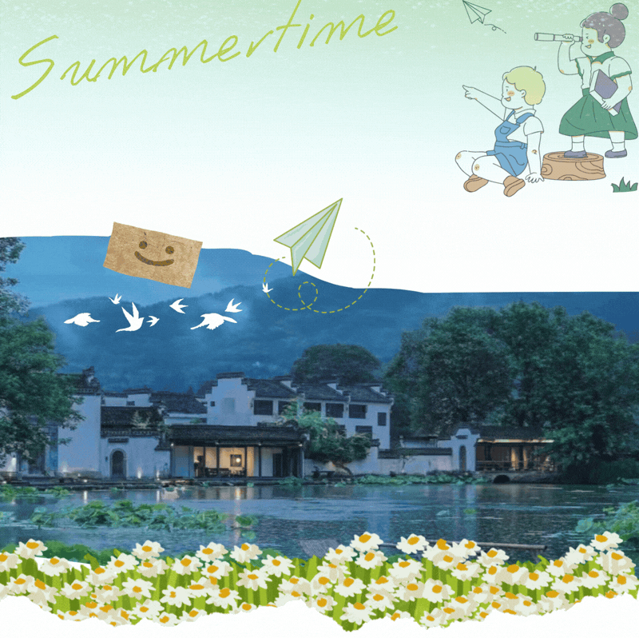
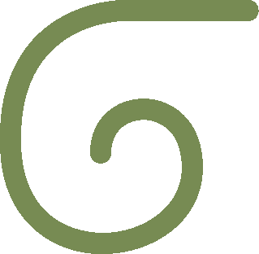
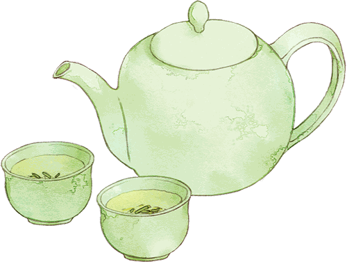

行者集结令 | 此去皖南，山水为证



指导教师
01领航访匠队
02笔墨拾韵组
03寻脉探微组
04镜藏窑光组
05通途承薪组
测测和谁最有缘
▼
END
来源 | 行者无疆实践团
图片 | 行者无疆实践团
文字 | 行者无疆实践团
编辑 | 袁 婵 童思嘉
审核 | 闫 磊
责编 | 邹靓靓 周 亮



指导教师
01领航访匠队
02笔墨拾韵组
03寻脉探微组
04镜藏窑光组
05通途承薪组
测测和谁最有缘
▼
END
来源 | 行者无疆实践团
图片 | 行者无疆实践团
文字 | 行者无疆实践团
编辑 | 袁 婵 童思嘉
审核 | 闫 磊
责编 | 邹靓靓 周 亮
SAME EXPEDITION / 同期推文

故里寻徽韵执心遇匠心#一场与家乡非遗的深度重逢XINGZHEWUJIANG致第十八期行者无疆XINGZHEWUJIANG踏上黄山这片浸润千年文脉的土地，参加本次行者无疆社会实践

踏暑风走入徽州非遗不再是书页上遥远的文字亲眼见证匠心续一缕文脉微光七月徽乡暑气悠长背起行囊奔赴远方踏过古村斑驳回廊静听匠人岁月过往一纸初心寻访非遗少年逐光传承未央致我们的仲夏徽

赴山水徽州守千年文脉行者无疆·文韵皖南记录每一刻美好时光山风漫过马头墙墨香缓缓漫出旧坊我们步履不停寻访非遗的故事留存岁月里温热的匠心这个暑期，我跟随“行者无疆”实践团前往黄山，